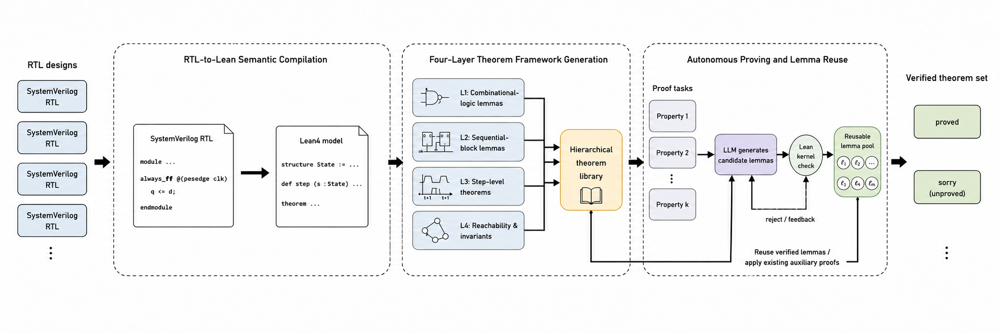
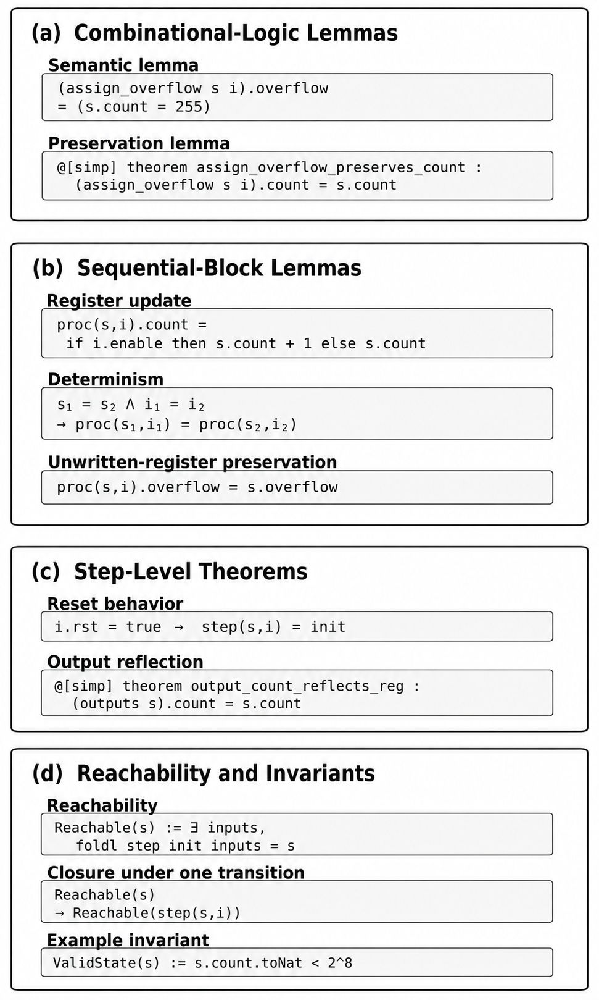

Translates SystemVerilog RTL into executable Lean 4 state-transition models and builds hierarchical theorem libraries with LLM-assisted, kernel-checked lemma reuse.
Abstract
Formal verification with interactive theorem provers can provide strong correctness guarantees for register transfer level designs, but applying it to existing SystemVerilog code requires substantial manual effort in semantic modeling and proof construction. This paper presents Rtl2lean, a framework that automatically translates RTL designs into executable Lean 4 models and builds a hierarchical theorem library for subsequent verification. The generated model represents hardware execution as a pure state transition function, while a four layer theorem framework captures combinational semantics, sequential updates, single cycle behavior, and reachability and invariants. When a high level property cannot be discharged by the existing theorem base, an LLM based proving loop proposes intermediate lemmas from the current proof context and Lean feedback. Only lemmas accepted by the Lean kernel are added to the reusable lemma pool. Experiments on six SystemVerilog designs generate 403 theorems, all of which are successfully checked by Lean. Among 358 foundational lemmas, 287 are available for automatic reuse, yielding a reusable lemma ratio of 80.2 percent. The results demonstrate that Rtl2lean can construct machine checked RTL proof libraries with low checking overhead and substantial cross property lemma reuse.
Problem
Formal verification of RTL designs with interactive theorem provers gives strong correctness guarantees but requires substantial manual effort in semantic modeling and proof construction. Applying it to existing SystemVerilog code is costly due to the mismatch between event-driven Verilog semantics and Lean's functional reasoning.
Approach
Rtl2lean parses SystemVerilog with PySlang, lowers it to an intermediate representation, and generates a pure functional Lean 4 state-transition model with State, Inputs, Outputs, and a step function. It builds a four-layer theorem framework covering combinational semantics, sequential updates, single-cycle behavior, and reachability/invariants. When a high-level property cannot be discharged by the existing theorem base, an LLM-based proving loop proposes intermediate lemmas from proof context and Lean feedback. Only lemmas accepted by the Lean kernel are added to a reusable lemma pool.

Figure 1: RTL2LEAN framework.

Figure 2: Representative examples generated by the four-layer.
Results
Experiments on six OpenCores SystemVerilog designs generated 403 theorems, all successfully checked by Lean 4.26. Among 358 foundational lemmas, 287 were available for automatic reuse, giving an 80.2 percent reusable lemma ratio with a 100 percent proof success rate.